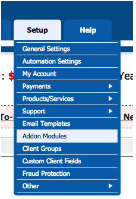
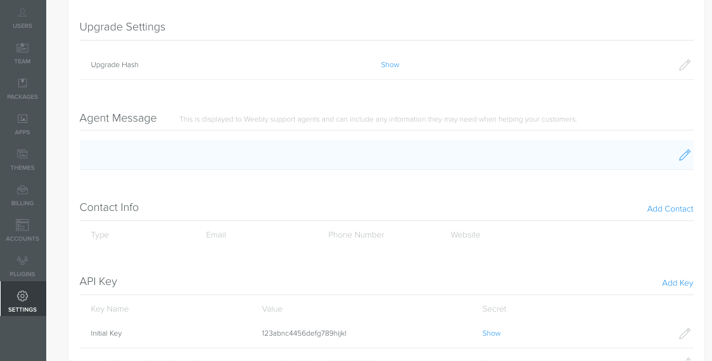
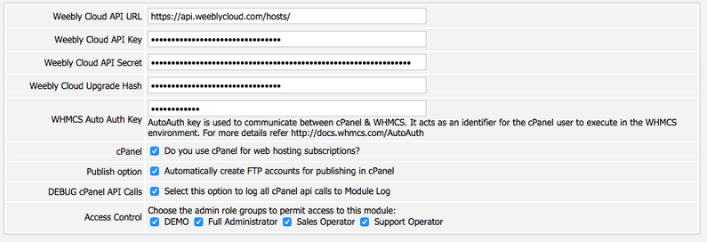

The WHMCS plug-in allows you to integrate your WHMCS instance with Weebly.
WHMCS Requirements
This module has been tested on WHMCS 5.24 and greater (including v6 + v7).
Note: If you currently use the Weebly cPanel plug-in and plan to use it in conjunction with WHMCS, you must upgrade your cPanel plug-in to v1.5, available from the Cloud Admin.
Install the WHMCS Plug-in
From the PLUGINS tab of the Cloud Admin, click the Download icon to download the WHMCS archive.
Extract the contents of the archive file to your WHMCS installation folder (ex. /home/weebly/public_html/whmcs).
Upgrade WHMCS
When upgrading the WHMCS module, you extract the content of the archive file to your WHMCS installation folder (similar to installing).
Once the extract is complete, follow these steps:
Open the Setup > Addon Modules page in WHMCS Admin.

Addon Modules selection in WHMCS
Click Deactivate for Weebly Cloud.
Click Activate for Weebly Cloud.
WHMCS will perform the upgrade.
If you are upgrading from a version older than v1.6 take the following steps:
Go to WHMCS Admin portal > Addon Modules. Deactivate and then activate the WeeblyCloud plugin to enable the Debug cPanel API calls option available in configuration page.
Go to WHMCS Admin portal > Addons > Weebly Cloud > Plans and click the Import Plans button to update the plans with the new Domain field label in the ordering page and validate domain on ordering.
Once the upgrade is complete the latest version number for the module will display in WHMCS.
Note: If you currently use the Weebly cPanel plug-in and plan to use it in conjunction with WHMCS, you must upgrade your cPanel plug-in to v1.5, available from the Cloud Admin.
Configure WHMCS
Once installation is complete, Weebly Cloud will appear in the Addon section of WHMCS. Activate the Addon and then click the Configure button to start the configuration. Values described below:
API Url: Use https://api.weeblycloud.com/
API Key: Found in Cloud Admin - Settings Tab
API Secret: Found in Cloud Admin - Settings Tab
Upgrade Hash: Found in Cloud Admin - Settings Tab

API Key, Secret and Upgrade Hash in Cloud Admin
WHMCS Auth Key: Required for Single Sign On access to WHMCS. Learn more here.
cPanel: Select when using cPanel for your web hosting subscriptions.
Publish Option: When using WHMCS with cPanel, this option will automatically create FTP accounts and attach them to the Weebly site upon successful provisioning. The FTP Account Manager must be enabled in WHM for this feature to work properly. Additionally, the cPanel hosting account must be provisioned before Weebly in order for this to work properly.
DEBUG cPanel API Calls: This will show all cPanel API calls in the WHMCS Module Log.
Access Control: Selects which WHMCS admin roles have access to the module.

WHMCS Configure page
Launch the Admin UI
Once the module is activated, a Weebly Cloud option will display under the “Addons” menu. This is how you launch the administrative interface to the module.